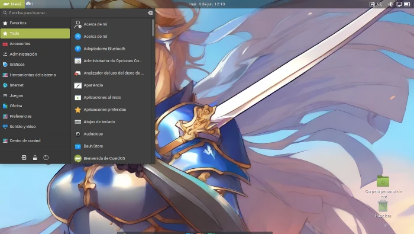

KuerdOS
Edition with KDE Plasma desktop environment, its software suite changes to adapt to Qt.

CuerdOS CinnamiX
CuerdOS + Cinnamon, an edition that aims to be easy to use and friendly for all types of users.

CuerdOS Shell
The green plane distribution together with a modified Gnome Shell, to bring it back to its classic and familiar distribution.

CuerdOS Mate
Edition with the Mate desktop environment, with a customization inspired by the ElementaryOS Pantheon desktop.

These editions were created and are mainly maintained by Gatoverde95.